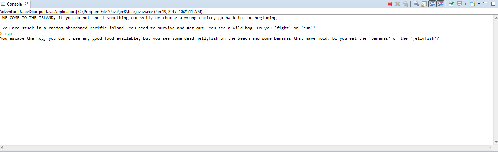
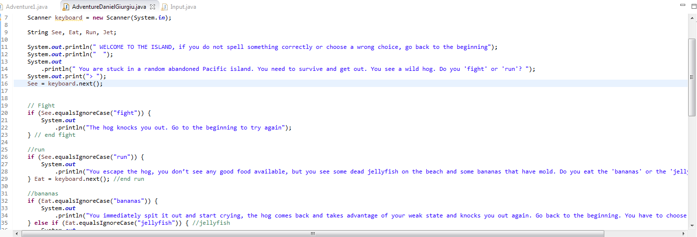

Unit 0
 
Description:
This unit was an introduction to Java, that is why it is called Unit 0. We learned basic Java concepts and vocabulary and we had to solve simple tasks and create a text adventure based on input and output. We learned the public static void main (String[] args) command. We used eclipse for our java programming and learned how to organize our information into packages and access them from our H Drives. We learned especially to work with braces and make sure every brace has an equal brace. We had to adjust different aspects from python to java, for example if statements and printing.
Concepts Learned:
- If else: like python and other languages, they check to see if a condition is met and performs an output, whatever that may be. With this we learned the print command, System.out.println(""), with ln being the next line command. We learned to define variables and do nested loops. We learned the rule of never putting a ; in front of a {.
- Syntax and Output: we learned all programs start with a class and the comment keys. We learned \n, \t, \r, and \b, which mean next line, tab, carriage return, and backspace, respectively. We learned escape sequences, with \\, \", and \', which out a \, a ", and a \'.
- Input: We learned about integers, shorts, floats, doubles, and bytes. Shorts and floats are used for decimals. We learned how to do keyboard.nextDouble() and that sort of thing.